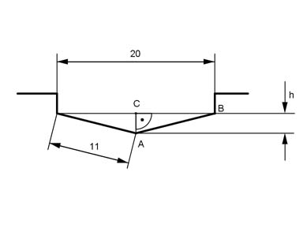

Pythagoras Aufgabe 72 Mit der dargestellten Lehre lässt sich überprüfen, ob ein Spiralbohrer richtig nachgeschliffen ist. Berechnen Sie die Höhe h in mm, wenn alle Maße in mm angegeben sind.  Satz von Pythagoras im Dreieck ABC: AB² = AC² + BC² |-BC² AC² = h² = AB² - BC² 20 h² = 11² - (----)² 2 h² = 11² mm² - 10² mm² = 21 mm² |√ h = 4,6 mm